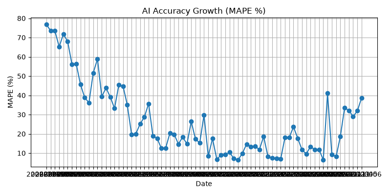

Self-Learning Osaka Weather AI
今日の 24時間 予報
大阪 天気予報
| Time | Temperature | Precipitation Probability | Weather |
|---|
| 2026-11-09T12:00 | 14.4°C | 0% | Overcast |
| 2026-11-09T13:00 | 15.8°C | 0% | Overcast |
| 2026-11-09T14:00 | 14.8°C | 0% | Overcast |
| 2026-11-09T15:00 | 15.1°C | 0% | Partly cloudy |
| 2026-11-09T16:00 | 15.4°C | 0% | Partly cloudy |
| 2026-11-09T17:00 | 13.9°C | 0% | Partly cloudy |
| 2026-11-09T18:00 | 12.2°C | 0% | Partly cloudy |
| 2026-11-09T19:00 | 11.1°C | 0% | Overcast |
| 2026-11-09T20:00 | 11.7°C | 0% | Overcast |
| 2026-11-09T21:00 | 10.5°C | 0% | Overcast |
| 2026-11-09T22:00 | 10.7°C | 0% | Partly cloudy |
| 2026-11-09T23:00 | 8.1°C | 0% | Mainly clear |
| 2026-11-10T00:00 | 8.2°C | 0% | Partly cloudy |
| 2026-11-10T01:00 | 9.3°C | 0% | Overcast |
| 2026-11-10T02:00 | 8.9°C | 0% | Partly cloudy |
| 2026-11-10T03:00 | 8.5°C | 0% | Partly cloudy |
| 2026-11-10T04:00 | 9.7°C | 0% | Partly cloudy |
| 2026-11-10T05:00 | 8.7°C | 0% | Overcast |
| 2026-11-10T06:00 | 10.4°C | 0% | Partly cloudy |
| 2026-11-10T07:00 | 10.8°C | 0% | Overcast |
| 2026-11-10T08:00 | 11.7°C | 0% | Overcast |
| 2026-11-10T09:00 | 12.4°C | 0% | Overcast |
| 2026-11-10T10:00 | 14.2°C | 0% | Partly cloudy |
| 2026-11-10T11:00 | 14.7°C | 0% | Partly cloudy |
直近の完了済み気象データ
| 時間 | 気温 | 降水 |
|---|
| 00:00 | 10.7 | 0% |
| 01:00 | 10.3 | 0% |
| 02:00 | 9.9 | 0% |
| 03:00 | 9.8 | 0% |
| 04:00 | 9.6 | 0% |
| 05:00 | 9.4 | 0% |
| 06:00 | 9.0 | 0% |
| 07:00 | 8.9 | 0% |
| 08:00 | 9.9 | 0% |
| 09:00 | 11.5 | 0% |
| 10:00 | 13.3 | 0% |
| 11:00 | 14.6 | 0% |
| 12:00 | 15.8 | 0% |
| 13:00 | 16.7 | 0% |
| 14:00 | 16.8 | 0% |
| 15:00 | 16.2 | 0% |
| 16:00 | 15.6 | 0% |
| 17:00 | 14.5 | 0% |
| 18:00 | 13.7 | 0% |
| 19:00 | 13.2 | 0% |
| 20:00 | 13.0 | 0% |
| 21:00 | 12.7 | 0% |
| 22:00 | 12.3 | 0% |
| 23:00 | 11.9 | 0% |
| 00:00 | 11.7 | 0% |
| 01:00 | 11.4 | 0% |
| 02:00 | 11.4 | 0% |
| 03:00 | 10.9 | 0% |
| 04:00 | 10.7 | 0% |
| 05:00 | 10.6 | 0% |
| 06:00 | 10.4 | 0% |
| 07:00 | 10.4 | 0% |
| 08:00 | 11.1 | 0% |
| 09:00 | 11.6 | 0% |
| 10:00 | 12.6 | 1% |
| 11:00 | 13.4 | 4% |
誤差（完了観測 vs 事前予測）
MAE: 1.225 / MAPE: 9.98%
| 温度誤差 (°C) |
|---|
| 0.80 |
| 0.70 |
| 0.80 |
| 1.00 |
| 0.60 |
| 0.20 |
| 0.90 |
| 1.30 |
| 2.30 |
| 2.70 |
| 2.50 |
| 1.20 |
| 2.40 |
| 1.50 |
| 2.80 |
| 1.90 |
| 1.00 |
| 1.50 |
| 0.70 |
| 0.40 |
| 0.80 |
| 0.80 |
| 0.20 |
| 0.40 |
AI 成長グラフ（MAPE履歴）
